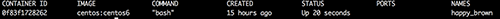

Docker 實作入門

目的
主要介紹 Docker 的實作，會提到以下幾個部分：
- 建立 Docker container
- 管理 Docker 上的 container
- 下載 image 、commit 建立新的 image
- 經由撰寫 Dockerfile 來自動建立新的 image
在進入實作前，會簡單介紹 Docker 與虛擬化的差異、Docker 上的重要元件，接下來準備的部分會需要安裝 Docker 及先登入 Docker Hub。
簡介 Docker
Docker 是一個開源專案，支援多平台，從筆電到公、私有雲上能進行快速部署輕量、獨立的作業環境。Docker 使用 Linux 核心中的功能，Namespace 及 Control Groups (cgroups) 等，來達到建置獨立的環境及控制 CPU 、Memory 、網路等資源。
專案網址： https://www.docker.com/
Docker Container 與虛擬化的不同
在前面敘述有提到，Docker 能提供建置獨立的環境，但是運作的方式與虛擬化有所差別。
虛擬化
虛擬化通常都是透過在 Host OS 上安裝 hypervisor ，由 hypervisor 來管理不同虛擬主機，每個虛擬主機都需要安裝不同的作業系統。
Docker Container
Docker 提供應用程式在獨立的 container 中執行，這些 container 並不需要像虛擬化一樣額外依附在 hypervisor 或 guest OS 上，是透過 Docker Engine 來進行管理。

Docker 重要元件
在進入如何操作 Docker 前，先介紹 Docker 中的三個主要部分：
- Docker Images image 能開啟 Docker container，但是 images 是唯讀的，也就是直接 結束 container 後，在 container 變更的資料並不會儲存在 image 內，但是 Docker 能對變更後的 container 建立 image。
- Docker Containers Docker Containers 提供獨立、安全的環境給應用程式執行，container 是從 Docker image 建立，運行在主機上。
- Docker Registries 將 Docker images 上傳、下載到公開或私有的 Docker Registries 上，與其他人分享，公開的像 Docker Hub 提供了許多不同的 images ，如：Ubuntu 或 Ubuntu 環境下安裝 Ruby on Rails 的 images ，只要下載來，就能直接開啟成 container。
操作 Docker 方法
Docker 主機上會運行 Docker daemon，也能開啟許多 container。 要對 Docker 進行操作，使用 Docker client，也就是 Docker 指令 (例如：docker pull, docker images ...) ，分別可以藉由：
- UNIX sockets
- 網路 (RESTful API)
對主機上的 Docker daemon 進行控制，當然 Docker client 與 Docker daemon 可以是同一台或不同主機上 。
參考 Docker Remote API :
Docker Remote API - Docker Documentation https://docs.docker.com/reference/api/docker_remote_api/
準備
本篇文章實作版本：Docker 1.3.2
1. 安裝
接下來我們先在主機上安裝 Docker：
Ubuntu
安裝：
$ sudo apt-get update
$ sudo apt-get install docker.io
測試一下是否安裝成功：
$ sudo docker info
Containers: 0
Images: 0
Storage Driver: aufs
Root Dir: /var/lib/docker/aufs
Dirs: 3
...
Mac OS X, Windows
在 Mac OS X 或 Windows 上需要安裝 Boot2Docker ，因為 Docker Engine 有用到 Linux 的特定功能，所以 Boot2Docker 會用 Virtualbox 建立 Linux VM ，在 Linux VM 上開啟 Docker daemon 由在 Mac OS X 或 Windows 的 Docker client 去操作Linux VM 上 Docker daemon (後面會在詳述)。
Boot2Docker 安裝參考：
Mac OS X : https://docs.docker.com/installation/mac/
Windows : https://docs.docker.com/installation/windows/
備註：在 Mac OS X 與 Windows 執行 docker 指令不用加上 sudo
2. 註冊及登入 Docker Hub 帳號
在前面有提到 Docker Hub 上提供了許多 images 可以使用，先註冊 Docker Hub 帳號，網址：https://hub.docker.com/account/signup/
接著可以利用 docker login 來登入 Docker Hub ：
$ sudo docker login
Username: [ENTER YOUR USERNAME] Password:
Email: [ENTER YOUR EMAIL] Login Succeeded
一、操作 Docker Container
1. 建立一個新的 Container
先來暖身一下，啟動一個 CentOS 6 container，希望能執行指令來顯示今天的日期與時間。 使用 docker run 開啟一個新的 container：
$ sudo docker run centos:centos6 /bin/date
Unable to find image 'centos:centos6' locally
centos:centos6: The image you are pulling has been verified
511136ea3c5a: Pull complete
5b12ef8fd570: Pull complete
Status: Downloaded newer image for centos:centos6
Mon Dec 1 03:25:41 GMT 2014
輸出結果的第 1 行到第 5 行是，因為 docker 主機上原來並沒有 centos6 的 image 檔案，所以會先從 Docker Hub 下載。
輸出結果的最後一行就是執行的 date 指令。另外可以發現，如果扣除下載 image 時間，開啟一個 container 只要非常短的時間。
docker run啟動一個新的 containercentos:centos6CentOS 6.X (目前 CentOS 6 最新版為 6.6)。centos是 repo 名稱，centos6是 repo 內 tags。 到 Docker Hub 網站搜尋 centos 後，在 centos repo 頁面上就會呈現有哪些 tags 。
/bin/date開啟 container 後執行的指令
docker run 還有其他參數可以進入 container 的終端機指令互動模式下：
$ sudo docker run -t -i centos:centos6 bash
[進入 container...]
[root@ea27583b1dba /]# whoami
root
- -t 開啟 tty 進入 container
- -i 透過 STDIN 與 container 進行互動
該如何離開 container 的終端機？
- 輸入
exit或按control/Ctrl+D，目前使用的這個 container 就會結束，而下次在開啟的 container 又是一個全新的。 control/Ctrl+P，再按control/Ctrl+Q，就可以跳離開這個 container 的 tty。
2. 管理 Container
如果只是離開了 container 終端機， container 並沒有關閉或停止執行，所以接下來說明如何來管理 container。
(1) Container ID
每一個 container 都有一個唯一的 CONTAINER ID，在上面的部分，執行 sudo docker run -t -i centos:centos6 bash 開啟新的 container 後，會進入 container 的終端機內：
[root@0f83f1728262 /]# whoami
root
0f83f1728262 就是 CONTAINER ID，之後都是利用此 id 來分別不同的 container。
(2) 列出 Container
Docker client 提供了 docker ps 可以查看目前開啟且正在執行的 container：
$ sudo docker ps

可以看到 CONTAINER ID 及用哪一個 image 建立。
(3) 在 Container 中執行指令
離開了 container 的終端機後，並沒有將 container 關掉，可以用 docker exec 在 container 中執行指令，例如下面範例就是再回到0f83f1728262 container 的終端機：
$ sudo docker exec -t -i 0f83f1728262 bash
[進入container...]
[root@0f83f1728262 /]#
(4) 停止 Container
想要讓在執行中的 container 停止，用 docker stop 停止執行中的 container ：
$ sudo docker stop 0f83f1728262
0f83f1728262
查看 container 狀態：
$ sudo docker ps -a

備註： docker ps -a，可以看到所有沒被刪除的 container。
(5) 開啟停止的 Container
開啟停止的 container docker start：
$ sudo docker start 0f83f1728262
開啟後會執行一開始建立這個 container 的指令及參數，所以如果建立的時候，並沒有開啟終端機與互動模式，執行完指令後，container 又結束了。
(6) 刪除 Container 透過 docker ps -a 可以列出所有建立過且沒被刪除的 container： docker rm 刪除不需要的 container ：
$ sudo docker rm 0f83f1728262
0f83f1728262
(7) Container 內建立額外的掛載點
在 container 建立時，可以再建自訂的掛載點：
$ docker run -t -i -v /myData centos:centos6 bash
[進入 container...]
[root@20d24e944789 /]# df -h
Filesystem Size Used Avail Use% Mounted on
rootfs 19G 459M 17G 3% /
...
/dev/sda1 19G 459M 17G 3% /myData
...
- -v 在 container 內的掛載點
(8) 共享主機與 Container 資料 (這個部分可以等到 下載 Image 再回頭來看) Docker 也提供了可以與主機目錄共享的資料的功能，這在開發的時候蠻好用的，只要把專案目錄掛載到 container 內，就能直接在 container 測試、執行。
我們將主機上的 /home/aming/Docker/tutorial/ 目錄掛到 container 內的 /app 目錄：
$ sudo docker run -t -i -v \
> /home/aming/Docker/tutorial/:/app \
> tutum/apache-php bash
- -v [HOST_DIR]:[CONTAINER_DIR] 將 host OS 上的目錄掛載到 container 內的掛載點
二、管理 Docker Image
建立一個新的 Container 內有提到，使用 docker run 建立新的 container 時，如果 Docker 發現沒有符合的 image 預設會去 Docker Hub 下載，那我們該如何知道目前有哪些可用的 images ？
docker images 可以列出主機內已經存在的 image：
$ sudo docker images
REPOSITORY TAG IMAGE ID CREATED VIRTUAL SIZE
centos centos6 70441cac1ed5 3 weeks ago 215.8 M
可以看到前面所提到的 image 的「repo 名稱」、「tag 名稱」等資訊。
1. 搜尋 Images
搜尋 php 關鍵字：
$ sudo docker search php
2. 下載 Image
我們下載搜尋到的 tutum/apache-php ：
$ sudo docker pull tutum/apache-php
Pulling repository tutum/apache-php
...
想知道目前主機上有哪些 images 可以使用 docker images ，會列出主機內所有的 image：
$ sudo docker images
3. 製作新的 Image
把剛才下載下來的 tutum/apache-php 已經有 Apache 及 PHP 環境，直接再利用這個 image，安裝 PHPUnit，製作成新的 image：
開啟一個新的 Container：
$ sudo docker run -t -i tutum/apache-php bash
[進入 container...]
Container 內 PHPUnit 安裝（示範用）：
root@aeeb1980c96e:/app# apt-get update
root@aeeb1980c96e:/app# apt-get install wget php5-xdebug
root@aeeb1980c96e:/app# cd /usr/local/bin ; \
> wget https://phar.phpunit.de/phpunit.phar
root@aeeb1980c96e:/usr/local/bin# chmod +x phpunit.phar
root@aeeb1980c96e:/usr/local/bin# mv phpunit.phar \
> phpunit
root@aeeb1980c96e:/usr/local/bin# exit
[離開 container...]
目前，我們已經建立一個新的 container，container ID 為 aeeb1980c96e 。
使用 docker commit 將 container 製作成新的 image：
$ sudo docker commit -m="Add PHPUnit and xdebug" \
> -a="Huang Yi-Ming" aeeb1980c96e \
> ymhuang0808/phpunit-testing:php5.5.9
$ sudo docker images
在 container 內建立好需要的環境後，把修改的 container 建立成一個新 image 檔案，這個 image 已經有增加 PHPUnit 測試環境。
-m：製作這個 image 的訊息-a：image 的作者- aeeb1980c96e：則為上面有提到的 container ID
- ymhuang0808/phpunit-testing：repo 名稱，通常斜線（ / ）前面為在 Docker Hub 的帳號名稱（前面部分有註冊 Docker Hub 帳號），後面則是 repo 名稱
- php5.5.9：tag 名稱，因為 repo 內可能會有不版本的 image ，就可以利用 tag 來區分
4. 上傳至 Docker Hub
我們做了一個新的 image 後，可以上傳到 Docker Hub 或私有的 registry 將 image 分享出去。
首先，我們需要到 Docker Hub 網站建立一個自己的 repo：
-
點選「Add Repository」，選擇「Respository」
-
填寫 Repo 名稱（注意要小寫）與描述，接著點選「Add Repository」
-
成功在 Docker Hub 上建立 repo

在 Docker Hub 建立好 repo 後，就可以將 image 使用 docker push 上傳至 Docker Hub：
$ sudo docker push ymhuang0808/phpunit-testing
The push refers to a repository [ymhuang0808/phpunit-testing] (len: 1)
Sending image list
Pushing repository ymhuang0808/phpunit-testing (1 tags)
511136ea3c5a: Image already pushed, skipping
...
Pushing tag for rev [be964598c221] on {https://cdn-registry-1.docker.io/v1/repositories/ymhuang0808/phpunit-testing/tags/php5.5.9}
5. 移除 Image
$ sudo docker rmi \
> ymhuang0808/phpunit-testing:php5.5.9
如果無法刪除可能是有 container 使用了這個 image ，所以要先用 docker rm 移除使用的 container，才能順利移除 image。
三、撰寫 Dockerfile
在上面了解到能自己製作 image ，並且透過 Docker 分享出去。
除了可以利用做好的 image 方便建立一個新的 container 外，也可以撰寫好 Dockerfile 來建立 image 的腳本檔案，再使用 docker build 就能幫我們建立一個 image，一樣可以上傳到 Docker Hub 分享出去！
下面要示範如何使用 Dockerfile 來自動建立 image。跟上面一樣，我們利用 tutum/apache-php 來建 PHPUnit 的環境。
1. 建立目錄與 Dockerfile
$ mkdir ~/dockerfile-demo && cd ~/dockerfile-demo
$ touch Dockerfile
2. 編輯 Dockerfile
$ vi Dockerfile
加入以下內容：
FROM tutum/apache-php:latest
MAINTAINER Huang AMing
RUN sed -i 's/archive.ubuntu.com/free.nchc.org.tw/g' \
/etc/apt/sources.list
RUN apt-get update \
&& apt-get install -y php5-xdebug
ADD https://phar.phpunit.de/phpunit.phar /usr/local/bin/
RUN cd /usr/local/bin \
&& chmod +x phpunit.phar \
&& mv phpunit.phar phpunit
FROM：以什麼 image 為基底MAINTAINER：維護 image 的人RUN：在 image 內執行的指令ADD：將本機的檔案或遠端的檔案加入到 image 內的目錄，如果是壓縮檔會自動解壓縮。想將本機檔案或目錄複製到 image 可以使用COPY
3. 透過 Dockerfile 建立 Image
Dockerfile 就像一個腳本檔案，用 docker build 會根據 Dockerfile 內容來建立新的 image：
$ sudo docker build \
> -t="ymhuang0808/phpunit-testing:php5.5.9" .
Sending build context to Docker daemon 2.56 kB
Sending build context to Docker daemon
Step 0 : FROM tutum/apache-php:latest
---> 7e6d00854917
Step 1 : MAINTAINER Huang AMing
---> Running in 22412a8891e1
...
Successfully built 5f466619af2d
-t：repo 名稱加上 tag ，以冒號（ : ）區隔- . 依據當下目錄下的
Dockerfile
參考資料
- Docker Documentation https://docs.docker.com/
作者簡介 黃儀銘 (YMHuang) ，目前任職於自由軟體鑄造場。 部落格: https://blog.fmbase.tw/